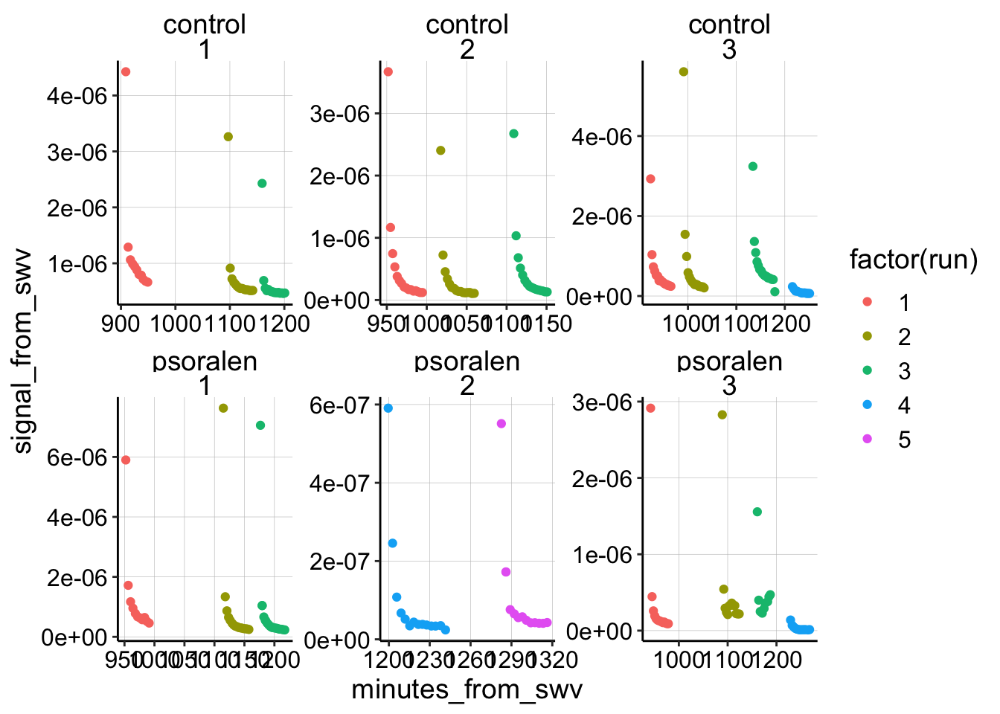
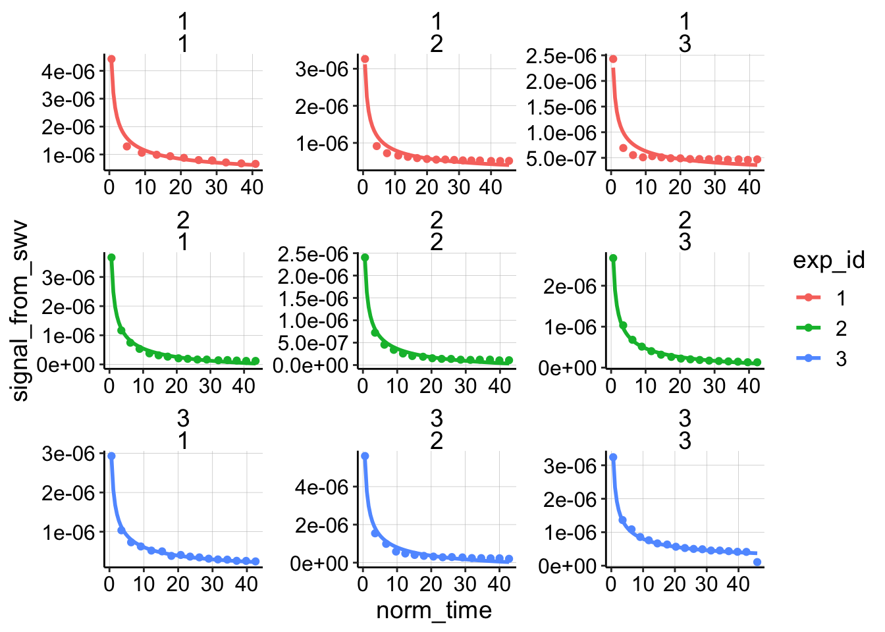
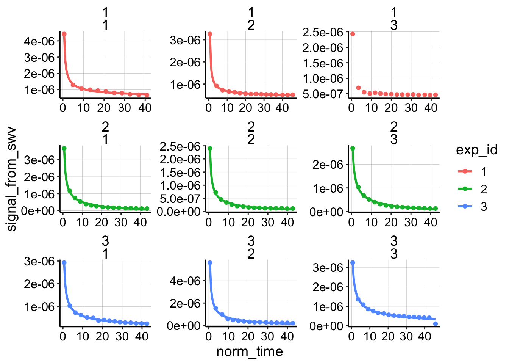
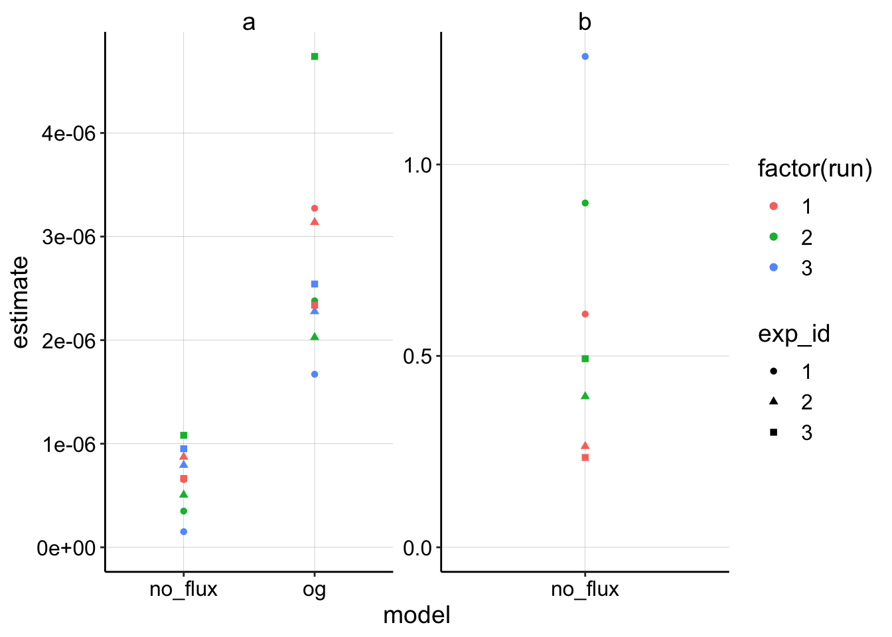
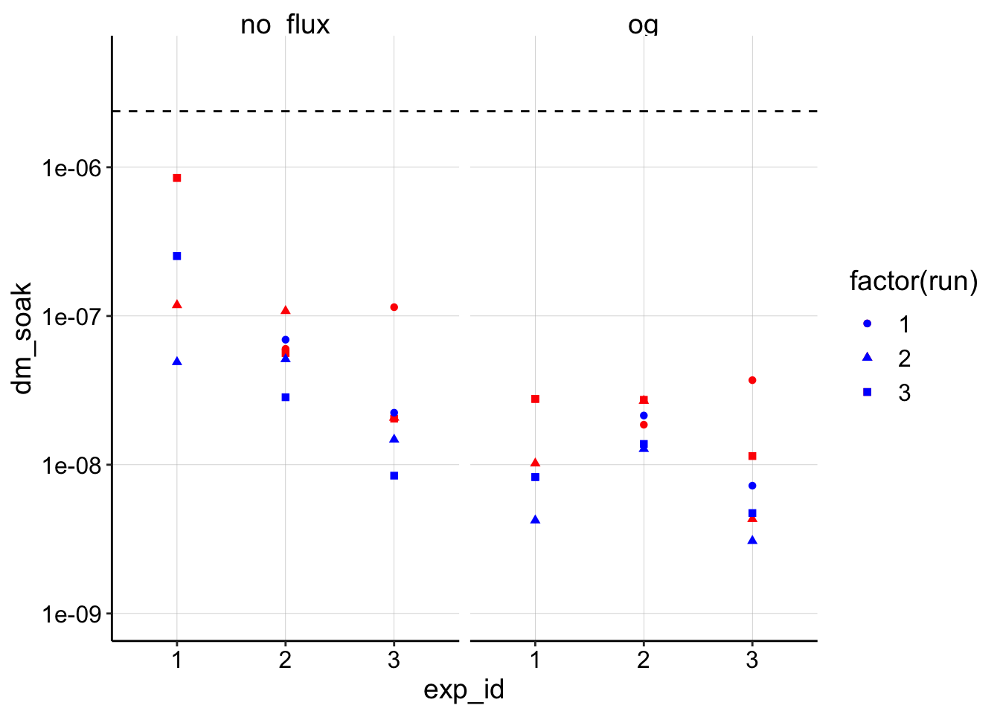
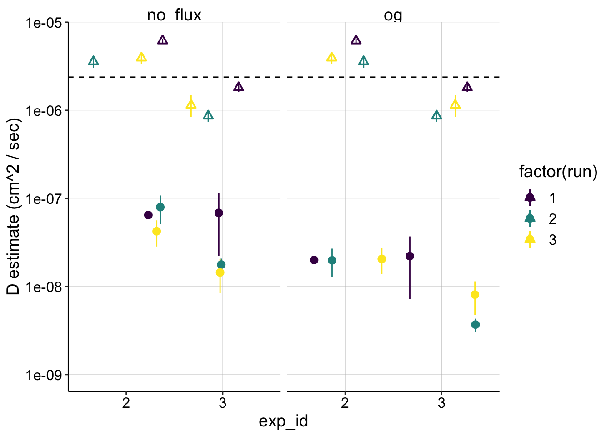
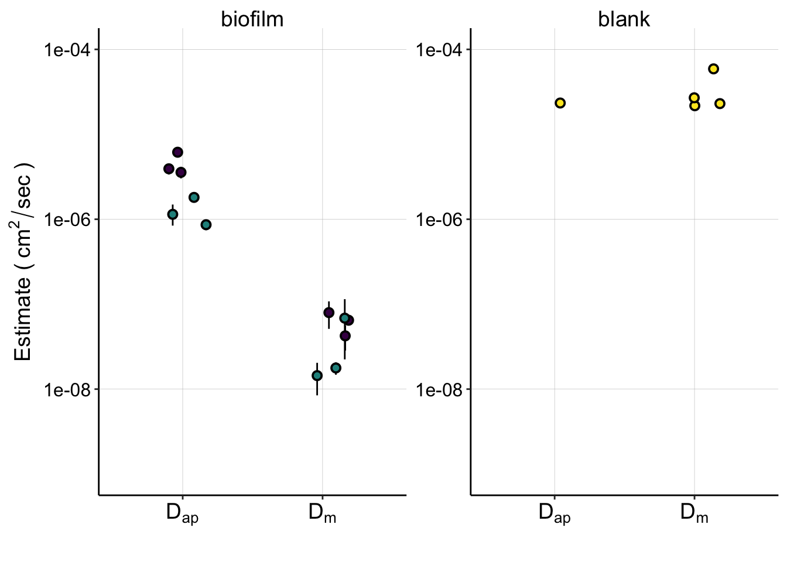

Psoralen Non equilibrium Aggregate
\(D_m\) Analysis
01_28_19
library(tidyverse)
library(cowplot)
library(broom)
library(modelr)
library(viridis)
library(lubridate)
library(hms)
library(knitr)
library(kableExtra)
knitr::opts_chunk$set(tidy.opts=list(width.cutoff=60),tidy=TRUE, echo = TRUE, message=FALSE, warning=FALSE, fig.align="center")
source("../../tools/echem_processing_tools.R")
source("../../tools/plotting_tools.R")
theme_set(theme_1())Intro
So, we’ve already established that psoralen treatment doesn’t have an obvious effect on \(D_{ap}\), but that this dataset is still very useful for estimating \(D_{ap}\) for our control dPHZ biofilms. Let’s use that data to also estimate \(D_m\) for the control biofilm, since we are very interested to see whether \(D_m\) can explain \(D_{ap}\).
Results
Let’s import all the processed data, which will have the signals from the SWVs along with their timestamp. I’m importing our \(D_{ap}\) estimates as well as the blank IDA \(D_m\) estimates from the psoralen 2 (01/17/19) notebook.
dap_dataset <- read_csv("../../01_28_19_psoralen_nonequil_aggregate/Analysis/01_28_19_aggregate_SWV_GC_signals.csv")
dap_estimates <- read_csv("./01_28_19_swv_gc_dap_estimates_aggregate.csv")
df_2blank_estimates <- read_csv("../../01_17_19_psoralen_nonequil_2/Analysis/01_17_19_dm_estimates.csv")Data overview and fits
First, let’s look at all of the SWV signals vs. timestamp (in min) for all of the different experiments. This is only the transfer scans from i1, since i2 is problematic.
ggplot(dap_dataset %>% filter(reactor=='transfer' & electrode_from_swv=='i1') ,
aes(x = minutes_from_swv, signal_from_swv, color = factor(run))) +
geom_point() +
facet_wrap(treatment~exp_id, scales = 'free') Overall it looks pretty good! Now let’s reset the start of each run to ~0 min (exactly 0.6 min because that’s the average time it takes between immersion and starting the scan). Let’s also go ahead and exclude the psoralen data right now and get rid of that one control dataset that was taken with SWVslow parameters (exp 3, run 4).
Once that’s done I can plot all of the datasets fit with the semi-infinite diffusion model:
dap_test <- dap_dataset %>%
filter(electrode_from_swv=='i1' & treatment=='control') %>%
filter(exp_id!='3' | run!=4)
dap_test_norm <- dap_test %>%
group_by(exp_id,reactor,run) %>%
mutate(min_time = min(minutes_from_swv)) %>%
mutate(norm_time = minutes_from_swv - min_time + 0.6)
ggplot(dap_test_norm %>% filter(reactor=='transfer'),
aes(x = norm_time, y = signal_from_swv, color = exp_id)) +
geom_point() +
geom_smooth(method='nls',
formula=y~b*(x)^-0.5+a,
method.args=list(start=c(b=0.1,a=1e-7)),
se=F)+
facet_wrap(exp_id~run,scales='free')
Unlike for the other biofilm/blank datasets this original model actually fits reasonably well. Let’s see how the finite diffusion model fits:
e = exp(1)
ggplot(dap_test_norm %>% filter(reactor=='transfer'),
aes(x = norm_time, y = signal_from_swv, color = exp_id )) +
geom_point() +
geom_smooth(method='nls',
formula=y~(a*(x)^-0.5)*(2+e^(b*(x)^-0.5))+c,
method.args=list(start=c(a=0.1,b=0.1,c=0)),
se=F)+
facet_wrap(exp_id~run,scales='free') It looks like it does fit slightly better, although the difference is not that great. Let’s proceed to estimate \(D_m\) with both models for now, although ultimately I will just use the no flux / finite model because we already estimated a \(t_s\) for that one.
Also notice that experiment one looks a little different than the other two experiments. The points decay very quickly, and they never approach zero because of a weird high background. I always thought that dataset was a little weird, so we’ll throw that out later.
Estimate model coefficients
Now lets perform the nls fits and look at the parameter estimates for the two models:
nls_no_flux <- dap_test_norm %>%
filter(reactor=='transfer') %>%
group_by(exp_id,run) %>%
do(tidy(nls(.,formula = signal_from_swv~(a*(norm_time)^-0.5)*(2+e^(b/norm_time))+c,start=list(a=0.1,b=0.1,c=0)))) %>%
mutate(model='no_flux')
nls_og <- dap_test_norm %>%
filter(reactor=='transfer') %>%
group_by(exp_id,run) %>%
do(tidy(nls(.,formula = signal_from_swv~(a*(norm_time)^-0.5)+c,start=list(a=0.1,c=0)))) %>%
mutate(model='og')
nls_fits <- rbind(nls_no_flux,nls_og)
ggplot(nls_fits %>% filter(term!='c'),aes(x=model,y=estimate,color=factor(run),shape = exp_id))+geom_point()+
facet_wrap(~term,scales='free')+ylim(0,NA) Ok, this is very similar to what I saw before. Recall that if the OG and no_flux model had identical fits, they should estimate \(a\) with a 4x difference, which is about what we see because the fits are similar.
Calculate \(D_m\)
With those estimates let’s now get our functions to calculate \(D_m\) from \(a\). Recall that for the no flux / finite model \(D_m = \frac{I_0^2 D_{ap} t_s}{4 \pi a^2}\) and for the original semi infinite model \(D_m = \frac{I_0^2 D_{ap} t_s}{\pi a^2}\).
dm_from_a_noFlux <- function(estimate, i_0, dap, t_s=0.1){
dm <- ( i_0^2 * dap * t_s ) / ( 4*pi* estimate^2)
dm
}
dm_from_a_OG <- function(estimate, i_0, dap, t_s=0.1){
dm <- ( i_0^2 * dap * t_s ) / ( pi* estimate^2)
dm
}Estimating parameters (with uncertainty)
So in order to estimate \(D_m\) we have to have the fit coefficient - \(a\), \(D_{ap}\), the scan time \(t_s\) and also the initial current \(I_0\). I was using the first SWV signal from the transfer to estimate \(I_0\), but I realized that it might be a severe underestimate.
I decided that the best way to proceed would be to use the soak SWV signal as a clear overestimate of the true \(I_0\), and we could look at the interval between the “transfer \(I_0\)” and the “soak \(I_0\)” as a sort of confidence interval.
So to estimate \(D_m\) I’ll grab the soak and transfer \(I_0\) estimates and feed them into the functions to estimate a high and low \(D_m\) for each dataset. Here I also grab the \(D_{ap}\) estimates for each run to use as an input. Lastly, I’m using \(t_s = 0.008\) because it empirically gave \(D_{ap} \approx D_m\) for the blank dataset using the no flux / finite model.
soak_i0 <- dap_test_norm %>%
mutate(i0_soak = signal_from_swv) %>%
filter(rep==0 & reactor=='soak') %>%
select(exp_id,reactor, run, i0_soak)
transfer_i0 <- dap_test_norm %>%
mutate(i0_transfer = signal_from_swv) %>%
filter(rep==0 & reactor=='transfer') %>%
select(exp_id,reactor, run, i0_transfer)
dm_estimates_soak <- left_join(nls_fits %>% filter(term=='a'), soak_i0, by = c('exp_id','run'))
dm_estimates <- left_join(dm_estimates_soak, transfer_i0, by = c('exp_id','run'))
dm_estimates_wDap <- left_join(dm_estimates,
dap_estimates %>%
filter(treatment=='control') %>%
select(exp_id, run, r.squared, dap, dap_high, dap_low),
by = c('exp_id','run'))\(D_m\) estimates by diffusion model
Ok, so let’s calculate of \(D_m\)’s and plot the estimates for each model.
dm_estimates_og <- dm_estimates_wDap %>%
filter(model=='og') %>%
mutate(dm_soak = dm_from_a_OG(estimate = estimate, i_0 = i0_soak, dap = dap, t_s = 0.008)) %>%
mutate(dm_transfer = dm_from_a_OG(estimate = estimate, i_0 = i0_transfer, dap = dap, t_s = 0.008))
dm_estimates_noFlux <- dm_estimates_wDap %>%
filter(model=='no_flux') %>%
mutate(dm_soak = dm_from_a_noFlux(estimate = estimate, i_0 = i0_soak, dap = dap, t_s = 0.008)) %>%
mutate(dm_transfer = dm_from_a_noFlux(estimate = estimate, i_0 = i0_transfer, dap = dap, t_s = 0.008))
dm_estimates_tidy <- rbind(dm_estimates_og,dm_estimates_noFlux) %>%
rowwise() %>%
mutate(mean = mean(c(dm_soak, dm_transfer)))
mean_biofilm_dap <- mean(dm_estimates_tidy$dap, na.rm = T)
ggplot(dm_estimates_tidy, aes(x = exp_id, shape = factor(run))) +
geom_point(aes(y = dm_soak),color = 'red') +
geom_point(aes(y = dm_transfer), color = 'blue') +
geom_hline(yintercept = mean_biofilm_dap, linetype = 2) +
facet_wrap(~model) +
scale_y_log10(limits = c(1e-9,5e-6))
So, in this plot the red is the estimate using the soak \(I_0\) and the blue dots are estimates using the transfer \(I_0\). You can see that although they vary, they are all within an order of magnitude of each other, so that’s encouraging! The other thing to notice is that all of the estimates are below the average biofilm \(D_{ap}\) (dotted line), which is interesting.
The two models do give different estimates, where the original (OG) model is consistently lower, which we saw previously. I’m going to proceed with the no flux / finite model since it gave slightly better fits and that’s what we used previously and also estimated \(t_s\) with.
The last thing to notice is that experiment 1 now gives a relatively higher \(D_m\) estimate with the finite model. At this point, because the data was weird from the beginning, I’m going to drop it from the figures below.
Comparing \(D_{ap}\) to \(D_m\)
First let’s just look at the individual \(D_{ap}\) estimates for each run compared to the \(D_m\) estimates.
ggplot(dm_estimates_tidy %>% filter(exp_id!='1'), aes(x = exp_id, y = mean, color = factor(run))) +
geom_pointrange(aes(ymin = dm_transfer, ymax = dm_soak), position = position_jitter(height = 0))+
geom_pointrange(aes(y = dap, ymin = dap_low, ymax = dap_high), position = position_jitter(height = 0), shape = 2)+
geom_hline(yintercept = mean_biofilm_dap, linetype = 2)+
facet_wrap(~model) +
scale_y_log10(limits = c(1e-9,NA)) +
scale_color_viridis(discrete = T) +
labs(y = "D estimate (cm^2 / sec)") Here the triangle point ranges are the \(D_{ap}\) estimates and the circles are the \(D_m\)’s. Note that the ranges for the \(D_{ap}\) are based off the confidence intervals from the fit’s estimate of the slope, but the \(D_m\) ranges are based off the soak and transfer \(I_0\) estimates (the center point is jus the mean of the two).
You can clearly see that \(D_m\) estimates lie 1-2 orders of magnitude lower than \(D_{ap}\). This may indicate that the molecular diffusion described by \(D_m\) may not be fast enough to explain the perceived diffusion described by \(D_{ap}\).
To get some more perspective on this let’s reshape the data so we can plot it a little differently.
d_combined <- dm_estimates_tidy %>%
filter(exp_id!='1' & model=='no_flux') %>%
mutate(dm = mean) %>%
gather(key=d_cat,val=d_est,dap,dm) %>%
mutate(ymax = if_else(d_cat=='dap', dap_high, dm_soak)) %>%
mutate(ymin = if_else(d_cat=='dap', dap_low, dm_transfer)) %>%
mutate(biofilm = 'biofilm')
ggplot(d_combined,
aes(x = d_cat, y = d_est, shape = exp_id)) +
geom_pointrange(aes(ymin = ymin, ymax = ymax), position = position_jitter(height = 0))+
facet_wrap(~model) +
scale_y_log10(limits = c(1e-9,NA)) Now we can compare all of the estimates of biofilm \(D_m\) separately from \(D_{ap}\) and it’s clear they are quite different…
Now we can compare all of the estimates of biofilm \(D_m\) separately from \(D_{ap}\) and it’s clear they are quite different…
Comparing Biofilm to Blank IDA
With that type of visualization in hand let’s go back and get the \(D_m\) and \(D_{ap}\) data for the blank IDA. We can organize it in the same way and then show the blank and biofilm datasets on the same plot / scale.
d_blank <- left_join(df_2blank_estimates %>% filter(biofilm=='blank' & model=='no_flux'),
dap_estimates %>% filter(treatment=='blank'),
by = c('biofilm'='exp_id')) %>%
mutate(dm = dm_soak) %>%
gather(key=d_cat,val=d_est,dap,dm) %>%
mutate(ymax = if_else(d_cat=='dap', dap_high, dm_soak)) %>%
mutate(ymin = if_else(d_cat=='dap', dap_low, dm_soak)) %>%
mutate(exp_id = treatment) %>%
distinct(d_est,.keep_all = T)
#dap_estimates
d_combined_wBlank <- bind_rows(d_combined, d_blank)
ggplot(d_combined_wBlank,
aes(x = d_cat, y = d_est, fill = exp_id)) +
geom_pointrange(aes(ymin = ymin, ymax = ymax), position = position_jitter(height = 0,width=0.2),shape=21)+
facet_wrap(~biofilm, scales='free') +
scale_y_log10(limits = c(1e-9,1e-4))+
scale_fill_viridis(discrete = T) +
scale_x_discrete(breaks = c('dap','dm'), labels=c(expression(D[ap]),expression(D[m]))) +
labs(x='',y=expression("Estimate ("~cm^2 / sec~")"))+
guides(fill=F) +
theme(axis.text.x = element_text( size=14) )
#ggsave(filename = "../Figures/01_30_19_estimated_Dap_Dm_combined.pdf", width = 6, height = 4)Here you can now get perspective on how well our pipeline estimates \(D_m\) and \(D_{ap}\) for the blank IDA, where we think \(D_{ap} \approx D_m\), while also seeing how the biofilm compares.
This figure summarizes a lot of our conclusions, and I plan for it to be a panel in a figure for the paper.
You can see that:
- the blank \(D_m \approx D_{ap}\)
- The biofilm \(D_{ap}\) is significantly less than the blank.
- The biofilm \(D_m\) is significantly lower than \(D_{ap}\)
Conclusions
If we trust this analysis and the data then I think we would conclude that indeed \(D_m\) is less than \(D_{ap}\) in the biofilm and there must be some other process besides molecular diffusion that contributes to the perceived movement of electrons through the biofilm.
That said, we sorta cheated a little, since we chose a \(t_s\) that made \(D_{ap}\) and \(D_m\) similar.
Moving forward it will be important to evaluate that decision regarding \(t_s\) and also the finite diffusion model.